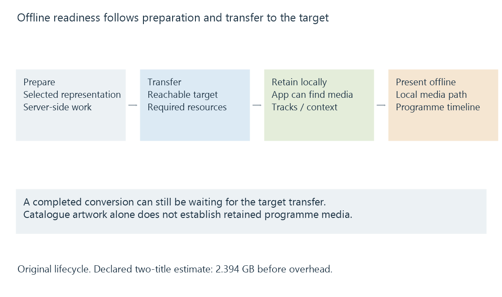

Offline playback and prepared local media
Offline playback uses media and required supporting resources retained on the viewing device before the session, while preserving a compatible representation and catalogue context.
Offline playback uses a representation retained on the viewing device before the session begins. It removes the need to retrieve the programme's media continuously from the server during that viewing.
The app still needs suitable local media, required supporting resources and enough context to identify what the user is playing.
Preparation, transfer and local readiness are different states
Emby's download options distinguish downloading to supported apps or targets and describe conversion before transfer when a job requests it. A converted job can be ready on the server while the target app is not yet running or reachable.

| State | What has been established |
|---|---|
| Job selected | A target and requested representation are defined |
| Conversion finished | The prepared media exists at that stage |
| Transfer finished | The intended media bytes reached the target |
| Local playback ready | The app can locate and use its required resources |
| Offline presentation | The local session is actually presenting media |
A catalogue image or title visible in the app establishes navigation metadata. It does not prove that the programme bytes have been retained.
The chosen local version has its own requirements
A download can contain an original source or a converted representation. The selected version must match the target player's actual decoding and presentation capabilities.
Audio and subtitle choices also matter. A locally retained video does not supply an external subtitle that was never included. A chosen language may be absent if another audio track was the one retained.
For segmented content, local readiness includes the relevant description and initialization plus the required media intervals. Downloading only a starting manifest does not make its remote references available without a connection.
Android Media3's download architecture is a public example of managing selected tracks and a local cache for playback. It illustrates the resource relationships rather than claiming that every Emby app uses that library.
Estimate the stored media you actually selected
An original storage exercise uses two complete titles of sixty and ninety minutes. Their selected local representations average 2 Mbit/s video plus 128 kbit/s audio, before overhead:
Combined rate = 2,128,000 bit/s
Sixty-minute title = 3600 × 2,128,000 / 8 = 957,600,000 bytes
Ninety-minute title = 5400 × 2,128,000 / 8 = 1,436,400,000 bytes
Total = 2,394,000,000 bytes
The result is 2.394 GB in decimal units. It is a conditional estimate from the selected average rates and durations, not a guaranteed encoder output size.
The space calculation should also include other retained tracks, descriptions and overhead. A source-sized original and a lower-rate prepared version can have substantially different storage demands.
Local viewing still belongs to a programme timeline
The local player can record progress while disconnected. Reconnecting allows an application, where supported, to reconcile that state with the library item.
A local prepared version may preserve the original timeline or may have different material. Source identity and time correspondence determine whether a local position can be reused directly as the original source's resume position.
See Also
- Offline media conversion and prepared versions
- Media playback on mobile devices
- Media source selection for playback
- Resume positions and playback timelines
- DRM-protected media and authorized playback paths